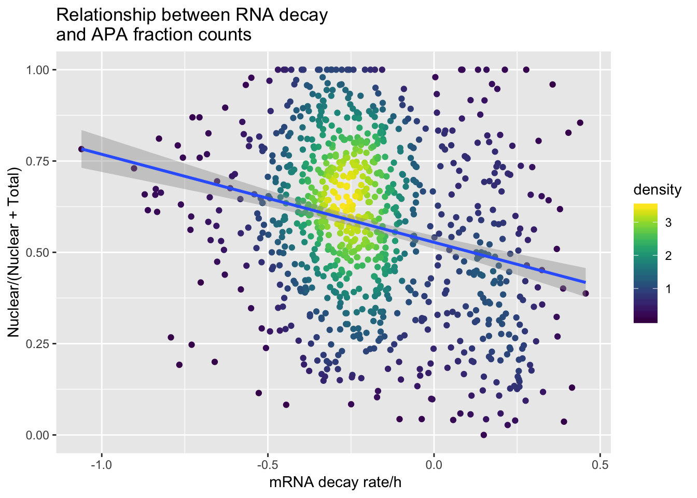

Last updated: 2019-03-18
Checks: 6 0
Knit directory: threeprimeseq/analysis/
This reproducible R Markdown analysis was created with workflowr (version 1.2.0). The Report tab describes the reproducibility checks that were applied when the results were created. The Past versions tab lists the development history.
Great! Since the R Markdown file has been committed to the Git repository, you know the exact version of the code that produced these results.
Great job! The global environment was empty. Objects defined in the global environment can affect the analysis in your R Markdown file in unknown ways. For reproduciblity it’s best to always run the code in an empty environment.
The command set.seed(12345) was run prior to running the code in the R Markdown file. Setting a seed ensures that any results that rely on randomness, e.g. subsampling or permutations, are reproducible.
Great job! Recording the operating system, R version, and package versions is critical for reproducibility.
Nice! There were no cached chunks for this analysis, so you can be confident that you successfully produced the results during this run.
Great! You are using Git for version control. Tracking code development and connecting the code version to the results is critical for reproducibility. The version displayed above was the version of the Git repository at the time these results were generated.
Note that you need to be careful to ensure that all relevant files for the analysis have been committed to Git prior to generating the results (you can use wflow_publish or wflow_git_commit). workflowr only checks the R Markdown file, but you know if there are other scripts or data files that it depends on. Below is the status of the Git repository when the results were generated:
Ignored files:
Ignored: .DS_Store
Ignored: .Rhistory
Ignored: .Rproj.user/
Ignored: data/.DS_Store
Ignored: data/perm_QTL_trans_noMP_5percov/
Ignored: output/.DS_Store
Untracked files:
Untracked: KalistoAbundance18486.txt
Untracked: analysis/4suDataIGV.Rmd
Untracked: analysis/DirectionapaQTL.Rmd
Untracked: analysis/EvaleQTLs.Rmd
Untracked: analysis/YL_QTL_test.Rmd
Untracked: analysis/groSeqAnalysis.Rmd
Untracked: analysis/ncbiRefSeq_sm.sort.mRNA.bed
Untracked: analysis/snake.config.notes.Rmd
Untracked: analysis/verifyBAM.Rmd
Untracked: analysis/verifybam_dubs.Rmd
Untracked: code/PeaksToCoverPerReads.py
Untracked: code/strober_pc_pve_heatmap_func.R
Untracked: data/18486.genecov.txt
Untracked: data/APApeaksYL.total.inbrain.bed
Untracked: data/AllPeak_counts/
Untracked: data/ApaQTLs/
Untracked: data/ApaQTLs_otherPhen/
Untracked: data/ChromHmmOverlap/
Untracked: data/DistTXN2Peak_genelocAnno/
Untracked: data/EmpiricalDists/
Untracked: data/FeatureoverlapPeaks/
Untracked: data/GM12878.chromHMM.bed
Untracked: data/GM12878.chromHMM.txt
Untracked: data/GWAS_overlap/
Untracked: data/LianoglouLCL/
Untracked: data/LocusZoom/
Untracked: data/LocusZoom_Unexp/
Untracked: data/LocusZoom_proc/
Untracked: data/MatchedSnps/
Untracked: data/NucSpecQTL/
Untracked: data/NuclearApaQTLs.txt
Untracked: data/PeakCounts/
Untracked: data/PeakCounts_noMP_5perc/
Untracked: data/PeakCounts_noMP_genelocanno/
Untracked: data/PeakUsage/
Untracked: data/PeakUsage_noMP/
Untracked: data/PeakUsage_noMP_GeneLocAnno/
Untracked: data/PeaksUsed/
Untracked: data/PeaksUsed_noMP_5percCov/
Untracked: data/PolyA_DB/
Untracked: data/QTL_overlap/
Untracked: data/RNAdecay/
Untracked: data/RNAkalisto/
Untracked: data/RefSeq_annotations/
Untracked: data/Replicates_usage/
Untracked: data/Signal_Loc/
Untracked: data/TotalApaQTLs.txt
Untracked: data/Totalpeaks_filtered_clean.bed
Untracked: data/UnderstandPeaksQC/
Untracked: data/WASP_STAT/
Untracked: data/YL-SP-18486-T-combined-genecov.txt
Untracked: data/YL-SP-18486-T_S9_R1_001-genecov.txt
Untracked: data/YL_QTL_test/
Untracked: data/apaExamp/
Untracked: data/apaExamp_proc/
Untracked: data/apaQTL_examp_noMP/
Untracked: data/bedgraph_peaks/
Untracked: data/bin200.5.T.nuccov.bed
Untracked: data/bin200.Anuccov.bed
Untracked: data/bin200.nuccov.bed
Untracked: data/clean_peaks/
Untracked: data/comb_map_stats.csv
Untracked: data/comb_map_stats.xlsx
Untracked: data/comb_map_stats_39ind.csv
Untracked: data/combined_reads_mapped_three_prime_seq.csv
Untracked: data/diff_iso_GeneLocAnno/
Untracked: data/diff_iso_proc/
Untracked: data/diff_iso_trans/
Untracked: data/eQTL_inAPA/
Untracked: data/eQTLs_Lietal/
Untracked: data/ensemble_to_genename.txt
Untracked: data/example_gene_peakQuant/
Untracked: data/explainProtVar/
Untracked: data/filtPeakOppstrand_cov_noMP_GeneLocAnno_5perc/
Untracked: data/filtered_APApeaks_merged_allchrom_refseqTrans.closest2End.bed
Untracked: data/filtered_APApeaks_merged_allchrom_refseqTrans.closest2End.noties.bed
Untracked: data/first50lines_closest.txt
Untracked: data/gencov.test.csv
Untracked: data/gencov.test.txt
Untracked: data/gencov_zero.test.csv
Untracked: data/gencov_zero.test.txt
Untracked: data/gene_cov/
Untracked: data/joined
Untracked: data/leafcutter/
Untracked: data/merged_combined_YL-SP-threeprimeseq.bg
Untracked: data/molPheno_noMP/
Untracked: data/mol_overlap/
Untracked: data/mol_pheno/
Untracked: data/nom_QTL/
Untracked: data/nom_QTL_opp/
Untracked: data/nom_QTL_trans/
Untracked: data/nuc6up/
Untracked: data/nuc_10up/
Untracked: data/other_qtls/
Untracked: data/pQTL_inAPA/
Untracked: data/pQTL_otherphen/
Untracked: data/pacbio_cov/
Untracked: data/peakPerRefSeqGene/
Untracked: data/peaks4DT/
Untracked: data/perm_QTL/
Untracked: data/perm_QTL_GeneLocAnno_noMP_5percov/
Untracked: data/perm_QTL_GeneLocAnno_noMP_5percov_3UTR/
Untracked: data/perm_QTL_diffWindow/
Untracked: data/perm_QTL_opp/
Untracked: data/perm_QTL_trans/
Untracked: data/perm_QTL_trans_filt/
Untracked: data/protAndAPAAndExplmRes.Rda
Untracked: data/protAndAPAlmRes.Rda
Untracked: data/protAndExpressionlmRes.Rda
Untracked: data/reads_mapped_three_prime_seq.csv
Untracked: data/smash.cov.results.bed
Untracked: data/smash.cov.results.csv
Untracked: data/smash.cov.results.txt
Untracked: data/smash_testregion/
Untracked: data/ssFC200.cov.bed
Untracked: data/temp.file1
Untracked: data/temp.file2
Untracked: data/temp.gencov.test.txt
Untracked: data/temp.gencov_zero.test.txt
Untracked: data/threePrimeSeqMetaData.csv
Untracked: data/threePrimeSeqMetaData55Ind.txt
Untracked: data/threePrimeSeqMetaData55Ind.xlsx
Untracked: data/threePrimeSeqMetaData55Ind_noDup.txt
Untracked: data/threePrimeSeqMetaData55Ind_noDup.xlsx
Untracked: data/threePrimeSeqMetaData55Ind_noDup_WASPMAP.txt
Untracked: data/threePrimeSeqMetaData55Ind_noDup_WASPMAP.xlsx
Untracked: output/LZ/
Untracked: output/deeptools_plots/
Untracked: output/picard/
Untracked: output/plots/
Untracked: output/qual.fig2.pdf
Unstaged changes:
Modified: analysis/28ind.peak.explore.Rmd
Modified: analysis/CompareLianoglouData.Rmd
Modified: analysis/EmpDistforOverlaps.Rmd
Modified: analysis/NewPeakPostMP.Rmd
Modified: analysis/NuclearSpecQTL.Rmd
Modified: analysis/PeakToXper.Rmd
Modified: analysis/apaQTLoverlapGWAS.Rmd
Modified: analysis/characterize_apaQTLs.Rmd
Modified: analysis/cleanupdtseq.internalpriming.Rmd
Modified: analysis/coloc_apaQTLs_protQTLs.Rmd
Modified: analysis/dif.iso.usage.leafcutter.Rmd
Modified: analysis/diff_iso_pipeline.Rmd
Modified: analysis/explainpQTLs.Rmd
Modified: analysis/explore.filters.Rmd
Modified: analysis/fixBWChromNames.Rmd
Modified: analysis/flash2mash.Rmd
Modified: analysis/initialPacBioQuant.Rmd
Modified: analysis/mispriming_approach.Rmd
Modified: analysis/overlapMolQTL.Rmd
Modified: analysis/overlapMolQTL.opposite.Rmd
Modified: analysis/overlap_qtls.Rmd
Modified: analysis/peakOverlap_oppstrand.Rmd
Modified: analysis/peakQCPPlots.Rmd
Modified: analysis/pheno.leaf.comb.Rmd
Modified: analysis/pipeline_55Ind.Rmd
Modified: analysis/swarmPlots_QTLs.Rmd
Modified: analysis/test.max2.Rmd
Modified: analysis/test.smash.Rmd
Modified: analysis/understandPeaks.Rmd
Modified: analysis/unexplainedeQTL_analysis.Rmd
Modified: code/Snakefile
Note that any generated files, e.g. HTML, png, CSS, etc., are not included in this status report because it is ok for generated content to have uncommitted changes.
These are the previous versions of the R Markdown and HTML files. If you’ve configured a remote Git repository (see ?wflow_git_remote), click on the hyperlinks in the table below to view them.
| File | Version | Author | Date | Message |
|---|---|---|---|---|
| Rmd | 52ab386 | Briana Mittleman | 2019-03-18 | look at gene 1 SD outside mean decay |
| html | 1283669 | Briana Mittleman | 2019-03-15 | Build site. |
| Rmd | 5d6ac93 | Briana Mittleman | 2019-03-15 | add decay analysis |
I want to ask if more nuclear specific transcripts compared to total is associated with RNA decay.
library(tidyverse)── Attaching packages ───────────────────────────────────────────────────────────────────────────────────── tidyverse 1.2.1 ──✔ ggplot2 3.1.0 ✔ purrr 0.3.1
✔ tibble 2.0.1 ✔ dplyr 0.8.0.1
✔ tidyr 0.8.3 ✔ stringr 1.4.0
✔ readr 1.3.1 ✔ forcats 0.4.0 Warning: package 'tibble' was built under R version 3.5.2Warning: package 'tidyr' was built under R version 3.5.2Warning: package 'purrr' was built under R version 3.5.2Warning: package 'dplyr' was built under R version 3.5.2Warning: package 'stringr' was built under R version 3.5.2Warning: package 'forcats' was built under R version 3.5.2── Conflicts ──────────────────────────────────────────────────────────────────────────────────────── tidyverse_conflicts() ──
✖ dplyr::filter() masks stats::filter()
✖ dplyr::lag() masks stats::lag()library(reshape2)
Attaching package: 'reshape2'The following object is masked from 'package:tidyr':
smithsdecay=read.table(file = "../data/RNAdecay/tr_decay_table_norm.txt", header=T, stringsAsFactors = F) %>% select(gene_id,contains("RNAdecay"))Change gene names:
geneNames=read.table("../data/ensemble_to_genename.txt", sep="\t", col.names = c('gene_id', 'GeneName', 'source' ),stringsAsFactors = F)decay_geneNames=decay %>% inner_join(geneNames, by="gene_id") %>% select(GeneName, contains("RNAdecay"))
decay_geneNames_long=melt(decay_geneNames,id.vars = "GeneName", value.name = "RNA_Decay", variable.name = "Decay_Ind") %>% separate(Decay_Ind, into=c("type", "ind"), sep="_") %>% mutate(Individual=paste("X" , ind, sep="")) %>% select(GeneName, Individual, RNA_Decay)For each gene I need to get nuclear counts/nuclear + counts
I want to use the filtered 5% peak counts.
/project2/gilad/briana/threeprimeseq/data/filtPeakOppstrand_cov_noMP_GeneLocAnno_5perc/filtered_APApeaks_merged_allchrom_refseqGenes.GeneLocAnno_NoMP_sm_quant.Nuclear.fixed.5perc.fc
/project2/gilad/briana/threeprimeseq/data/filtPeakOppstrand_cov_noMP_GeneLocAnno_5perc/filtered_APApeaks_merged_allchrom_refseqGenes.GeneLocAnno_NoMP_sm_quant.Total.fixed.5perc.fc
Make a dictionary from the individuals in the first line. I want them to have NA##### format
makepheno4decayComparison.py
nucCounts="/project2/gilad/briana/threeprimeseq/data/filtPeakOppstrand_cov_noMP_GeneLocAnno_5perc/filtered_APApeaks_merged_allchrom_refseqGenes.GeneLocAnno_NoMP_sm_quant.Nuclear.fixed.5perc.fc"
totCounts="/project2/gilad/briana/threeprimeseq/data/filtPeakOppstrand_cov_noMP_GeneLocAnno_5perc/filtered_APApeaks_merged_allchrom_refseqGenes.GeneLocAnno_NoMP_sm_quant.Total.fixed.5perc.fc"
#top key is individual
OutPutdic={}
#problem keeping ind connected to column
Try in R
Nuclear first:
NucAPA=read.table("../data/filtPeakOppstrand_cov_noMP_GeneLocAnno_5perc/filtered_APApeaks_merged_allchrom_refseqGenes.GeneLocAnno_NoMP_sm_quant.Nuclear.fixed.5perc.fc", stringsAsFactors = F, header = T) %>% select(-Chr, -Start, -End, -Strand, -Length) %>% separate(Geneid, into=c("peak", "chrom", "start", "end", "strand", "GeneName"), sep=":") %>% select(-chrom, -start, -end, -strand)
NucApaMelt=melt(NucAPA, id.vars =c( "peak", "GeneName"), value.name="count", variable.name="Ind") %>% separate(Ind, into=c('Individual', 'fraction') ,sep="_") %>% select(peak, GeneName, Individual, count)
NucAPA_bygene= NucApaMelt %>% group_by(GeneName,Individual) %>% summarise(NuclearSum=sum(count))Total first:
TotAPA=read.table("../data/filtPeakOppstrand_cov_noMP_GeneLocAnno_5perc/filtered_APApeaks_merged_allchrom_refseqGenes.GeneLocAnno_NoMP_sm_quant.Total.fixed.5perc.fc", stringsAsFactors = F, header = T) %>% select(-Chr, -Start, -End, -Strand, -Length) %>% separate(Geneid, into=c("peak", "chrom", "start", "end", "strand", "GeneName"), sep=":") %>% select(-chrom, -start, -end, -strand)
TotApaMelt=melt(TotAPA, id.vars =c( "peak", "GeneName"), value.name="count", variable.name="Ind") %>% separate(Ind, into=c('Individual', 'fraction') ,sep="_") %>% select(peak, GeneName, Individual, count)
TotAPA_bygene=TotApaMelt %>% group_by(GeneName,Individual) %>% summarise(TotalSum=sum(count))Sum these together:
Apa_all=TotAPA_bygene %>% inner_join(NucAPA_bygene, by=c("GeneName", "Individual")) %>% filter(NuclearSum>0 |TotalSum>0 ) %>% mutate(APAvalue=NuclearSum/(NuclearSum+TotalSum)) %>% select(GeneName, Individual, APAvalue)APAandDecay=decay_geneNames_long %>% inner_join(Apa_all, by=c('GeneName', 'Individual'))
ngenes=APAandDecay %>% select(GeneName) %>% unique() %>% nrow()
ngenes[1] 7888plot it:
summary(lm(data=APAandDecay, APAvalue~RNA_Decay))
Call:
lm(formula = APAvalue ~ RNA_Decay, data = APAandDecay)
Residuals:
Min 1Q Median 3Q Max
-0.46459 -0.15044 -0.01135 0.13392 0.58497
Coefficients:
Estimate Std. Error t value Pr(>|t|)
(Intercept) 0.4373568 0.0003228 1354.83 <2e-16 ***
RNA_Decay -0.0257699 0.0019255 -13.38 <2e-16 ***
---
Signif. codes: 0 '***' 0.001 '**' 0.01 '*' 0.05 '.' 0.1 ' ' 1
Residual standard error: 0.2017 on 398991 degrees of freedom
Multiple R-squared: 0.0004487, Adjusted R-squared: 0.0004462
F-statistic: 179.1 on 1 and 398991 DF, p-value: < 2.2e-16APAdecalAllindplot=ggplot(APAandDecay, aes(y=APAvalue, x=RNA_Decay)) + geom_point(aes(col=Individual)) +geom_density2d(na.rm = TRUE, size = 1, colour = 'red') + geom_smooth(method="lm") + annotate("text", label="Estimated Slope= -.026", y=1, x=-1) + labs(title="Relationship between RNA decay \nand APA fraction counts", x=" mRNA decay rate/h", y= "Nuclear/(Nuclear + Total)")
APAdecalAllindplot
| Version | Author | Date |
|---|---|---|
| 1283669 | Briana Mittleman | 2019-03-15 |
ggsave(APAdecalAllindplot, file="../output/plots/APAandRNADecay_allInd.png", height = 7, width=15)1 individual:
APAandDecay_18498= APAandDecay %>% filter(Individual=="X18498")
APAdecay_18498=ggplot(APAandDecay_18498, aes(y=APAvalue, x=RNA_Decay)) + geom_point() +geom_density2d(na.rm = TRUE, size = 1, colour = 'red') + annotate("text", label="Estimated Slope= -.133", y=0, x=-.8) + geom_smooth(method="lm")+ labs(title="Relationship between RNA decay \nand APA fraction counts", x=" mRNA decay rate/h", y= "Nuclear/(Nuclear + Total)")
APAdecay_18498
| Version | Author | Date |
|---|---|---|
| 1283669 | Briana Mittleman | 2019-03-15 |
ggsave(APAdecay_18498, file="../output/plots/APAandRNADecay_18498.png")Saving 7 x 5 in imagesummary(lm(data=APAandDecay_18498, APAvalue~RNA_Decay))
Call:
lm(formula = APAvalue ~ RNA_Decay, data = APAandDecay_18498)
Residuals:
Min 1Q Median 3Q Max
-0.63123 -0.17159 0.00659 0.17479 0.47142
Coefficients:
Estimate Std. Error t value Pr(>|t|)
(Intercept) 0.581252 0.002667 217.933 < 2e-16 ***
RNA_Decay -0.133867 0.016938 -7.903 3.09e-15 ***
---
Signif. codes: 0 '***' 0.001 '**' 0.01 '*' 0.05 '.' 0.1 ' ' 1
Residual standard error: 0.2324 on 7766 degrees of freedom
Multiple R-squared: 0.007979, Adjusted R-squared: 0.007851
F-statistic: 62.46 on 1 and 7766 DF, p-value: 3.094e-15Most of the genes have a similar decay rate. To se if there is a trend I need to look at the genes with >1sd outside of the mean.
decay_zscore=decay_geneNames_long %>% mutate(mean=mean(RNA_Decay), sd=sd(RNA_Decay)) %>% group_by(GeneName) %>% mutate(geneMean=mean(RNA_Decay)) %>% mutate(Zscore=(geneMean-mean)/sd) %>% select(GeneName, Zscore) %>% unique()
decay_1sd= decay_zscore %>% filter(abs(Zscore)>1) %>% select(GeneName)Filter the apa and decay for these genes.
APAandDecay_1sd= APAandDecay %>% filter(GeneName %in% decay_1sd$GeneName)
APAandDecay_1sd %>% select(GeneName) %>% unique() %>% nrow()[1] 938summary(lm(data=APAandDecay_1sd, APAvalue~RNA_Decay))
Call:
lm(formula = APAvalue ~ RNA_Decay, data = APAandDecay_1sd)
Residuals:
Min 1Q Median 3Q Max
-0.47225 -0.13964 -0.01415 0.12495 0.63026
Coefficients:
Estimate Std. Error t value Pr(>|t|)
(Intercept) 0.396160 0.001103 359.08 <2e-16 ***
RNA_Decay -0.072001 0.003283 -21.93 <2e-16 ***
---
Signif. codes: 0 '***' 0.001 '**' 0.01 '*' 0.05 '.' 0.1 ' ' 1
Residual standard error: 0.1868 on 47713 degrees of freedom
Multiple R-squared: 0.009982, Adjusted R-squared: 0.009962
F-statistic: 481.1 on 1 and 47713 DF, p-value: < 2.2e-16APAdecalAllindplot_zgreat1=ggplot(APAandDecay_1sd, aes(y=APAvalue, x=RNA_Decay)) + geom_point() +geom_density2d(na.rm = TRUE, size = 1, colour = 'red') + geom_smooth(method="lm")+ labs(title="Relationship between RNA decay \nand APA fraction counts", x=" mRNA decay rate/h", y= "Nuclear/(Nuclear + Total)")
APAdecalAllindplot_zgreat1ggsave(APAdecalAllindplot_zgreat1, file="../output/plots/APAandRNADecay1SD_allInd.png", height = 7, width=7)APAandDecay1SD_18498= APAandDecay_1sd %>% filter(Individual=="X18498")
APAdecay1sqd_18498=ggplot(APAandDecay1SD_18498, aes(y=APAvalue, x=RNA_Decay)) + geom_point() +geom_density2d(na.rm = TRUE, size = 1, colour = 'red')+geom_smooth(method="lm")+ labs(title="Relationship between RNA decay \nand APA fraction counts", x=" mRNA decay rate/h", y= "Nuclear/(Nuclear + Total)")
summary(lm(data=APAandDecay1SD_18498, APAvalue~RNA_Decay))
Call:
lm(formula = APAvalue ~ RNA_Decay, data = APAandDecay1SD_18498)
Residuals:
Min 1Q Median 3Q Max
-0.55209 -0.15612 0.00324 0.15925 0.53943
Coefficients:
Estimate Std. Error t value Pr(>|t|)
(Intercept) 0.527434 0.009106 57.923 < 2e-16 ***
RNA_Decay -0.240981 0.029133 -8.272 4.56e-16 ***
---
Signif. codes: 0 '***' 0.001 '**' 0.01 '*' 0.05 '.' 0.1 ' ' 1
Residual standard error: 0.2203 on 928 degrees of freedom
Multiple R-squared: 0.06867, Adjusted R-squared: 0.06766
F-statistic: 68.42 on 1 and 928 DF, p-value: 4.556e-16APAdecay1sqd_18498
ggsave(APAdecay1sqd_18498, file="../output/plots/APAandRNADecay1SD_18498.png")Saving 7 x 5 in image
sessionInfo()R version 3.5.1 (2018-07-02)
Platform: x86_64-apple-darwin15.6.0 (64-bit)
Running under: macOS 10.14.1
Matrix products: default
BLAS: /Library/Frameworks/R.framework/Versions/3.5/Resources/lib/libRblas.0.dylib
LAPACK: /Library/Frameworks/R.framework/Versions/3.5/Resources/lib/libRlapack.dylib
locale:
[1] en_US.UTF-8/en_US.UTF-8/en_US.UTF-8/C/en_US.UTF-8/en_US.UTF-8
attached base packages:
[1] stats graphics grDevices utils datasets methods base
other attached packages:
[1] reshape2_1.4.3 forcats_0.4.0 stringr_1.4.0 dplyr_0.8.0.1
[5] purrr_0.3.1 readr_1.3.1 tidyr_0.8.3 tibble_2.0.1
[9] ggplot2_3.1.0 tidyverse_1.2.1
loaded via a namespace (and not attached):
[1] Rcpp_1.0.0 cellranger_1.1.0 plyr_1.8.4 pillar_1.3.1
[5] compiler_3.5.1 git2r_0.24.0 workflowr_1.2.0 tools_3.5.1
[9] digest_0.6.18 lubridate_1.7.4 jsonlite_1.6 evaluate_0.13
[13] nlme_3.1-137 gtable_0.2.0 lattice_0.20-38 pkgconfig_2.0.2
[17] rlang_0.3.1 cli_1.0.1 rstudioapi_0.9.0 yaml_2.2.0
[21] haven_2.1.0 xfun_0.5 withr_2.1.2 xml2_1.2.0
[25] httr_1.4.0 knitr_1.21 hms_0.4.2 generics_0.0.2
[29] fs_1.2.6 rprojroot_1.3-2 grid_3.5.1 tidyselect_0.2.5
[33] glue_1.3.0 R6_2.4.0 readxl_1.3.0 rmarkdown_1.11
[37] modelr_0.1.4 magrittr_1.5 whisker_0.3-2 MASS_7.3-51.1
[41] backports_1.1.3 scales_1.0.0 htmltools_0.3.6 rvest_0.3.2
[45] assertthat_0.2.0 colorspace_1.4-0 labeling_0.3 stringi_1.3.1
[49] lazyeval_0.2.1 munsell_0.5.0 broom_0.5.1 crayon_1.3.4